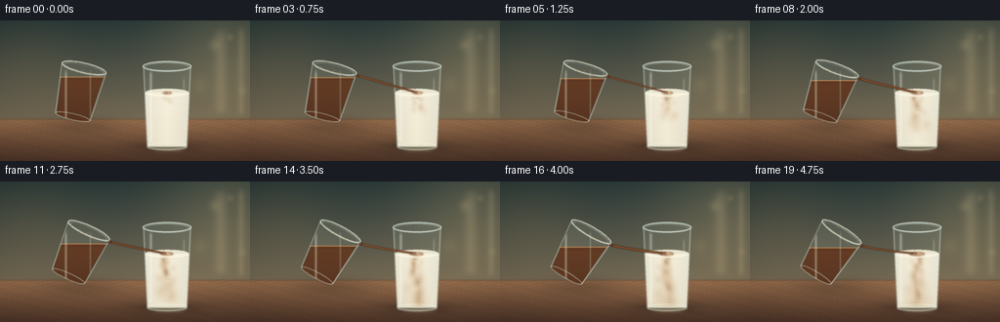
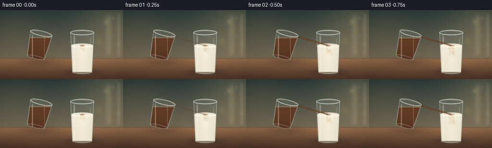
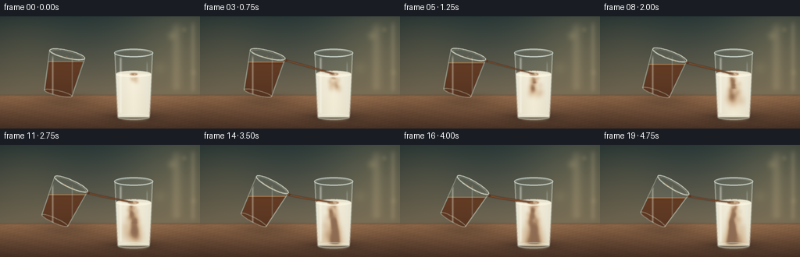
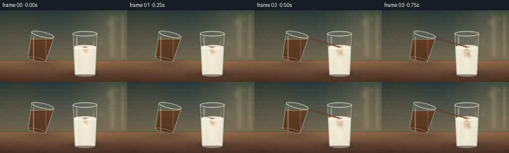

CODING AGENTS AS PIXEL WORLD MODELS
traex/DeepSeek-V4.1-Flash · material_0021
点击播放 · 原生 RGB 像素
逐轮保存的候选
回放视频、检查图与代码变化。
每份候选均可单独播放。实际图片检查记录在下方工具轨迹中。
候选 01播放与检查图
点击播放 · 原生 RGB 像素


展开代码变化
--- 上一保存版本
+++ 本次保存版本
@@ -0,0 +1,526 @@
+"""Procedural RGB render for: a clear glass of coffee poured into milk."""
+
+from pathlib import Path
+
+import numpy as np
+from PIL import Image, ImageDraw, ImageFilter
+from scipy.ndimage import binary_erosion, gaussian_filter
+
+import artifact_io
+
+
+ROOT = Path(__file__).resolve().parent
+BASE_W, BASE_H = 256, 144
+SCALE = 4
+W, H = BASE_W * SCALE, BASE_H * SCALE
+N_FRAMES = 20
+FPS = 4.0
+
+
+def smoothstep(value):
+ value = np.clip(value, 0.0, 1.0)
+ return value * value * (3.0 - 2.0 * value)
+
+
+def mix(a, b, amount):
+ return np.asarray(a) * (1.0 - amount) + np.asarray(b) * amount
+
+
+def color_array(color):
+ return np.asarray(color, dtype=np.float32)
+
+
+def blend(image, color, alpha):
+ alpha = np.clip(alpha, 0.0, 1.0)
+ if np.ndim(alpha) == 2:
+ alpha = alpha[:, :, None]
+ return image * (1.0 - alpha) + color_array(color) * alpha
+
+
+def base_mask(draw_fn):
+ image = Image.new("L", (W, H), 0)
+ draw = ImageDraw.Draw(image)
+ draw_fn(draw, SCALE)
+ return np.asarray(image, dtype=np.float32) / 255.0
+
+
+def polygon_mask(points, soft=0.8):
+ points = [(float(x) * SCALE, float(y) * SCALE) for x, y in points]
+ mask = base_mask(lambda draw, _: draw.polygon(points, fill=255))
+ return gaussian_filter(mask, soft * SCALE)
+
+
+def ellipse_mask(cx, cy, rx, ry, soft=0.8):
+ box = [
+ (cx - rx) * SCALE,
+ (cy - ry) * SCALE,
+ (cx + rx) * SCALE,
+ (cy + ry) * SCALE,
+ ]
+ mask = base_mask(lambda draw, _: draw.ellipse(box, fill=255))
+ return gaussian_filter(mask, soft * SCALE)
+
+
+def ellipse_ring(cx, cy, rx, ry, width, soft=0.55):
+ box = [
+ (cx - rx) * SCALE,
+ (cy - ry) * SCALE,
+ (cx + rx) * SCALE,
+ (cy + ry) * SCALE,
+ ]
+ mask = base_mask(
+ lambda draw, _: draw.ellipse(
+ box, outline=255, width=max(1, int(round(width * SCALE)))
+ )
+ )
+ return gaussian_filter(mask, soft * SCALE)
+
+
+def line_mask(points, width, soft=0.65):
+ points = [(float(x) * SCALE, float(y) * SCALE) for x, y in points]
+ mask = base_mask(
+ lambda draw, _: draw.line(
+ points, fill=255, width=max(1, int(round(width * SCALE))), joint="curve"
+ )
+ )
+ return gaussian_filter(mask, soft * SCALE)
+
+
+def transform_point(cx, cy, theta, x, y):
+ c, s = np.cos(theta), np.sin(theta)
+ return cx + x * c - y * s, cy + x * s + y * c
+
+
+def transformed_ellipse_points(cx, cy, theta, ox, oy, rx, ry, count=80):
+ points = []
+ for angle in np.linspace(0.0, 2.0 * np.pi, count, endpoint=False):
+ x = ox + rx * np.cos(angle)
+ y = oy + ry * np.sin(angle)
+ points.append(transform_point(cx, cy, theta, x, y))
+ return points
+
+
+def transformed_ellipse_mask(cx, cy, theta, ox, oy, rx, ry, soft=0.7):
+ return polygon_mask(
+ transformed_ellipse_points(cx, cy, theta, ox, oy, rx, ry), soft=soft
+ )
+
+
+def transformed_ellipse_ring(cx, cy, theta, ox, oy, rx, ry, width, soft=0.45):
+ points = transformed_ellipse_points(cx, cy, theta, ox, oy, rx, ry)
+ return line_mask(points + [points[0]], width=width, soft=soft)
+
+
+def make_background(xx, yy):
+ wall = np.empty((H, W, 3), dtype=np.float32)
+ wall_t = np.clip(yy / 103.0, 0.0, 1.0)[:, :, None]
+ wall[:] = mix((39, 55, 55), (115, 104, 83), wall_t)
+
+ # Window glow at the upper right and a softer reflected glow at the left.
+ glow_r = np.exp(
+ -(((xx - 242.0) / 73.0) ** 2 + ((yy - 39.0) / 80.0) ** 2)
+ )
+ glow_l = np.exp(
+ -(((xx - 30.0) / 58.0) ** 2 + ((yy - 46.0) / 58.0) ** 2)
+ )
+ wall = blend(wall, (209, 182, 124), 0.24 * glow_r)
+ wall = blend(wall, (151, 132, 88), 0.14 * glow_l)
+
+ # A diffuse vertical window frame, deliberately out of focus.
+ band = np.exp(-((xx - 226.0) / 6.5) ** 2)
+ band *= smoothstep((yy - 3.0) / 16.0) * (1.0 - smoothstep((yy - 89.0) / 11.0))
+ wall = blend(wall, (229, 207, 159), 0.17 * band)
+ band2 = np.exp(-((xx - 247.0) / 3.8) ** 2)
+ band2 *= smoothstep((yy - 2.0) / 14.0) * (1.0 - smoothstep((yy - 91.0) / 10.0))
+ wall = blend(wall, (239, 220, 177), 0.14 * band2)
+
+ # Very soft bokeh gives depth without competing with the glassware.
+ for bx, by, radius, strength in [
+ (220, 25, 5.8, 0.14),
+ (236, 17, 3.6, 0.11),
+ (205, 66, 8.0, 0.075),
+ (248, 72, 4.2, 0.08),
+ ]:
+ bokeh = np.exp(-(((xx - bx) / radius) ** 2 + ((yy - by) / radius) ** 2))
+ wall = blend(wall, (242, 216, 154), strength * bokeh)
+
+ # The table begins in a shallow horizontal band behind the glasses.
+ table = np.empty_like(wall)
+ depth = np.clip((yy - 101.0) / 43.0, 0.0, 1.0)[:, :, None]
+ table[:] = mix((144, 104, 73), (75, 51, 38), depth)
+ grain = (
+ 0.018 * np.sin(xx * 0.47 + yy * 1.8)
+ + 0.012 * np.sin(xx * 0.17 - yy * 0.7 + 1.3)
+ + 0.008 * np.sin(xx * 1.3 + yy * 0.22)
+ )
+ table *= (1.0 + grain[:, :, None])
+ table = blend(table, (196, 146, 96), 0.09 * np.exp(-((yy - 106.0) / 13.0) ** 2))
+
+ table_alpha = smoothstep((yy - 99.5) / 2.8)
+ image = wall * (1.0 - table_alpha[:, :, None]) + table * table_alpha[:, :, None]
+ image = blend(image, (52, 43, 37), 0.20 * np.exp(-((yy - 101.2) / 1.1) ** 2))
+
+ # Gentle vignette keeps the tabletop and glass rims luminous.
+ vignette = np.clip(
+ ((xx - 128.0) / 180.0) ** 2 + ((yy - 72.0) / 125.0) ** 2, 0.0, 1.0
+ )
+ image *= (1.0 - 0.13 * vignette[:, :, None])
+ return np.clip(image, 0.0, 255.0)
+
+
+def draw_shadows(image):
+ shadow = np.exp(-(((XX - 83.0) / 39.0) ** 2 + ((YY - 108.0) / 9.5) ** 2))
+ image = blend(image, (40, 30, 26), 0.26 * shadow)
+ shadow2 = np.exp(-(((XX - 171.0) / 36.0) ** 2 + ((YY - 130.0) / 7.0) ** 2))
+ image = blend(image, (35, 27, 23), 0.34 * shadow2)
+ contact = np.exp(-(((XX - 170.0) / 23.0) ** 2 + ((YY - 128.0) / 2.1) ** 2))
+ image = blend(image, (30, 22, 19), 0.24 * contact)
+ return image
+
+
+def milk_density(frame_t, cx, surface_y, bottom_y):
+ """Low-resolution concentration field for coffee mixing into the milk."""
+ gx, gy = np.meshgrid(
+ np.arange(BASE_W, dtype=np.float32) + 0.5,
+ np.arange(BASE_H, dtype=np.float32) + 0.5,
+ )
+ impact_x = cx + 0.8 * np.sin(2.0 * np.pi * frame_t * 1.1)
+ concentration = np.zeros((BASE_H, BASE_W), dtype=np.float32)
+
+ # A narrow falling ribbon near the impact point.
+ for lag, strength in [(0.02, 0.34), (0.10, 0.22)]:
+ phase_t = np.clip(frame_t - lag, 0.0, 1.0)
+ if phase_t <= 0.0:
+ continue
+ ribbon_x = impact_x + 3.4 * np.sin(
+ (gy - surface_y) * 0.12 - frame_t * 5.2 + lag * 9.0
+ )
+ ribbon = np.exp(-((gx - ribbon_x) / 3.4) ** 2)
+ ribbon *= (gy >= surface_y - 1.0) * (gy <= surface_y + 48.0 * phase_t)
+ ribbon *= np.exp(-np.maximum(gy - surface_y, 0.0) / 35.0)
+ concentration += strength * ribbon
+
+ # Coffee parcels curl down and outward after entering the milk.
+ for index in range(38):
+ spawn = -0.08 + index * 0.031
+ age = frame_t - spawn
+ if age <= 0.0:
+ continue
+ age = min(age, 1.15)
+ phase = index * 2.399
+ side = -1.0 if index % 2 else 1.0
+ y = surface_y + 4.0 + 66.0 * age
+ x = (
+ impact_x
+ + side * (2.0 + 9.0 * age) * (0.45 + 0.55 * np.sin(phase * 1.7))
+ + 4.5 * np.sin(age * 8.0 + phase)
+ )
+ sx = 2.2 + 5.8 * age
+ sy = 2.4 + 7.0 * age
+ parcel = np.exp(-((gx - x) / sx) ** 2 - ((gy - y) / sy) ** 2)
+ parcel *= np.exp(-0.55 * age) * (0.55 + 0.45 * np.sin(phase) ** 2)
+ concentration += 0.24 * parcel
+
+ # The newest coffee forms a warm patch across the meniscus.
+ surface_patch = np.exp(
+ -((gx - impact_x) / (9.0 + 2.0 * frame_t)) ** 2
+ - ((gy - surface_y) / (2.7 + 0.8 * frame_t)) ** 2
+ )
+ concentration += 0.45 * surface_patch
+
+ fade_depth = smoothstep((gy - surface_y + 1.0) / 3.0)
+ fade_depth *= 1.0 - smoothstep((gy - bottom_y + 2.0) / 4.0)
+ return np.clip(concentration * fade_depth, 0.0, 1.0)
+
+
+def draw_milk_glass(image, frame_t):
+ cx, top_y, bottom_y = 171.0, 47.0, 130.0
+ surface_y = 74.0
+ outer = polygon_mask(
+ [
+ (cx - 25.0, top_y),
+ (cx + 25.0, top_y),
+ (cx + 21.0, bottom_y),
+ (cx - 21.0, bottom_y),
+ ],
+ soft=0.45,
+ )
+ outer = np.maximum(outer, ellipse_mask(cx, top_y, 25.0, 5.3, soft=0.45))
+ outer = np.maximum(outer, ellipse_mask(cx, bottom_y, 21.0, 4.0, soft=0.55))
+ outer = np.clip(outer, 0.0, 1.0)
+
+ inner = binary_erosion(outer > 0.45, iterations=5)
+ inner = gaussian_filter(inner.astype(np.float32), 1.0)
+ edge = np.clip(outer - gaussian_filter(outer, 2.0 * SCALE), 0.0, 1.0)
+ edge = gaussian_filter(edge, 0.45 * SCALE)
+
+ # Back wall of the glass and the table seen through it.
+ image = blend(image, (173, 205, 199), 0.10 * inner)
+ image = blend(image, (242, 246, 230), 0.13 * edge)
+
+ liquid = inner * smoothstep((YY - surface_y + 1.0) / 2.2)
+ liquid *= 1.0 - smoothstep((YY - (bottom_y - 1.5)) / 2.0)
+ liquid *= outer
+
+ vertical = np.clip((YY - surface_y) / (bottom_y - surface_y), 0.0, 1.0)
+ milk = np.empty((H, W, 3), dtype=np.float32)
+ milk[:] = (246, 241, 222)
+ milk = mix(milk, (231, 220, 192), vertical[:, :, None] * 0.38)
+ side_shade = np.clip(np.abs(XX - cx) / 23.0, 0.0, 1.0)
+ milk *= (1.0 - 0.055 * side_shade[:, :, None])
+ image = image * (1.0 - liquid[:, :, None]) + milk * liquid[:, :, None]
+
+ density_small = milk_density(frame_t, cx, surface_y, bottom_y - 2.0)
+ density = np.asarray(
+ Image.fromarray((density_small * 255).astype(np.uint8)).resize(
+ (W, H), Image.Resampling.BICUBIC
+ ),
+ dtype=np.float32,
+ ) / 255.0
+ density = gaussian_filter(density, 0.55 * SCALE) * liquid
+
+ caramel = np.empty_like(milk)
+ caramel[:] = (178, 123, 72)
+ dark = np.empty_like(milk)
+ dark[:] = (94, 53, 31)
+ coffee_tint = mix(caramel, dark, np.clip((density - 0.42) * 1.5, 0.0, 1.0)[:, :, None])
+ image = blend(image, coffee_tint, np.clip(density * 0.72, 0.0, 0.64))
+
+ # The meniscus is a bright, shallow ellipse with a thin coffee-stained center.
+ surface = ellipse_mask(cx, surface_y, 22.2, 3.9, soft=0.5) * inner
+ image = blend(image, (249, 244, 224), 0.88 * surface)
+ meniscus = ellipse_ring(cx, surface_y, 22.2, 3.9, 0.75, soft=0.35) * inner
+ image = blend(image, (255, 251, 232), 0.65 * meniscus)
+ coffee_surface = ellipse_mask(
+ cx + 0.6 * np.sin(2.0 * np.pi * frame_t),
+ surface_y + 0.2,
+ 5.0 + 3.2 * frame_t,
+ 1.45 + 0.6 * frame_t,
+ soft=0.65,
+ )
+ image = blend(image, (137, 84, 48), 0.68 * coffee_surface * inner)
+
+ # Fine impact rings and foam beads.
+ impact_x = cx + 0.8 * np.sin(2.0 * np.pi * frame_t * 1.1)
+ for ring_index, delay in enumerate([0.18, 0.36, 0.54]):
+ age = (frame_t - delay) % 0.46
+ if frame_t < delay:
+ continue
+ radius = 2.3 + 7.0 * age
+ ring = ellipse_ring(
+ impact_x, surface_y, radius, radius * 0.31, 0.35, soft=0.55
+ )
+ image = blend(image, (250, 232, 200), (0.32 * (1.0 - age / 0.46)) * ring * inner)
+
+ for bead_index in range(8):
+ phase = bead_index * 1.71 + frame_t * 2.2
+ angle = bead_index * 2.2 + 0.5
+ radius = 2.0 + 4.2 * ((bead_index * 0.37 + frame_t * 0.8) % 1.0)
+ bx = impact_x + np.cos(angle) * radius
+ by = surface_y + np.sin(angle) * radius * 0.3
+ bead = ellipse_mask(bx, by, 0.7 + 0.25 * np.sin(phase), 0.42, soft=0.4)
+ image = blend(image, (232, 207, 170), 0.50 * bead * inner)
+
+ # Front glass: cool side walls, window reflection, rim, and heavy base.
+ left_highlight = np.exp(-((XX - (cx - 16.5)) / 1.45) ** 2)
+ left_highlight *= smoothstep((YY - (top_y + 3.0)) / 6.0)
+ left_highlight *= 1.0 - smoothstep((YY - 122.0) / 5.0)
+ image = blend(image, (255, 255, 245), 0.33 * left_highlight * inner)
+
+ right_highlight = np.exp(-((XX - (cx + 17.3)) / 0.9) ** 2)
+ right_highlight *= smoothstep((YY - 56.0) / 8.0)
+ right_highlight *= 1.0 - smoothstep((YY - 116.0) / 9.0)
+ image = blend(image, (218, 245, 240), 0.23 * right_highlight * inner)
+
+ side_edges = np.zeros_like(outer)
+ side_edges += line_mask([(cx - 24.0, top_y + 1.0), (cx - 20.5, bottom_y - 2.0)], 0.75, soft=0.4)
+ side_edges += line_mask([(cx + 24.0, top_y + 1.0), (cx + 20.5, bottom_y - 2.0)], 0.85, soft=0.4)
+ image = blend(image, (230, 248, 241), 0.62 * np.clip(side_edges, 0.0, 1.0))
+
+ rim_outer = ellipse_ring(cx, top_y, 25.0, 5.3, 1.2, soft=0.3)
+ rim_inner = ellipse_ring(cx, top_y + 0.5, 22.6, 4.1, 0.55, soft=0.35)
+ image = blend(image, (239, 253, 246), 0.77 * rim_outer)
+ image = blend(image, (255, 255, 247), 0.46 * rim_inner)
+ image = blend(image, (92, 126, 121), 0.26 * ellipse_ring(cx, top_y - 0.4, 23.3, 4.7, 0.55))
+
+ base = ellipse_ring(cx, bottom_y - 1.0, 20.8, 3.6, 1.1, soft=0.35)
+ base_fill = ellipse_mask(cx, bottom_y + 0.4, 20.5, 3.1, soft=0.45)
+ image = blend(image, (237, 247, 231), 0.48 * base)
+ image = blend(image, (196, 213, 195), 0.21 * base_fill)
+
+ # Narrow caustic beneath the milk.
+ caustic = ellipse_mask(cx + 2.0, 132.4, 16.0, 1.8, soft=2.2)
+ image = blend(image, (247, 213, 155), 0.20 * caustic)
+ return image
+
+
+def draw_coffee_glass(image, frame_t):
+ cx, cy = 80.0, 75.0
+ theta = np.deg2rad(13.0 + 18.0 * smoothstep(frame_t))
+
+ top = transformed_ellipse_mask(cx, cy, theta, 0.0, -27.0, 23.0, 5.0, soft=0.45)
+ bottom = transformed_ellipse_mask(cx, cy, theta, 0.0, 25.0, 18.2, 3.6, soft=0.45)
+ top_left = transform_point(cx, cy, theta, -23.0, -27.0)
+ top_right = transform_point(cx, cy, theta, 23.0, -27.0)
+ bottom_left = transform_point(cx, cy, theta, -18.2, 25.0)
+ bottom_right = transform_point(cx, cy, theta, 18.2, 25.0)
+ body = polygon_mask(
+ [top_left, top_right, bottom_right, bottom_left], soft=0.5
+ )
+ body = np.maximum(body, top)
+ body = np.maximum(body, bottom)
+ body = np.clip(body, 0.0, 1.0)
+ inner = binary_erosion(body > 0.45, iterations=5)
+ inner = gaussian_filter(inner.astype(np.float32), 0.8)
+
+ # Clear back glass.
+ image = blend(image, (183, 206, 196), 0.10 * inner)
+
+ spout_x, spout_y = transform_point(cx, cy, theta, 24.0, -26.0)
+ coffee_surface = spout_y + 3.0
+ coffee = inner * smoothstep((YY - coffee_surface + 0.7) / 1.4)
+ coffee = np.clip(coffee, 0.0, 1.0)
+
+ coffee_col = np.empty((H, W, 3), dtype=np.float32)
+ coffee_col[:] = (91, 50, 29)
+ depth = np.clip((YY - coffee_surface) / 42.0, 0.0, 1.0)
+ coffee_col = mix(coffee_col, (57, 32, 22), depth[:, :, None] * 0.55)
+ coffee_col = blend(coffee_col, (170, 102, 52), 0.12 * smoothstep((YY - coffee_surface) / 5.0))
+ image = image * (1.0 - coffee[:, :, None] * 0.92) + coffee_col * coffee[:, :, None] * 0.92
+
+ # The tilted glass still contains a level coffee surface.
+ surface_band = np.exp(-((YY - coffee_surface) / 0.65) ** 2) * body
+ image = blend(image, (205, 145, 87), 0.66 * surface_band)
+ surface_glint = line_mask(
+ [
+ transform_point(cx, cy, theta, -13.0, -24.0),
+ transform_point(cx, cy, theta, 12.0, -20.0),
+ ],
+ 0.45,
+ soft=0.35,
+ )
+ image = blend(image, (226, 177, 116), 0.24 * surface_glint)
+
+ # Window reflection and the bright glass walls.
+ highlight = np.exp(-((XX - (cx - 12.5)) / 1.15) ** 2)
+ highlight *= smoothstep((YY - 48.0) / 8.0)
+ highlight *= 1.0 - smoothstep((YY - 101.0) / 8.0)
+ image = blend(image, (249, 249, 228), 0.36 * highlight * inner)
+ highlight2 = np.exp(-((XX - (cx + 12.5)) / 0.8) ** 2)
+ highlight2 *= smoothstep((YY - 49.0) / 8.0)
+ highlight2 *= 1.0 - smoothstep((YY - 96.0) / 9.0)
+ image = blend(image, (215, 237, 222), 0.23 * highlight2 * inner)
+
+ left_side = line_mask(
+ [transform_point(cx, cy, theta, -23.0, -26.0), transform_point(cx, cy, theta, -18.2, 24.0)],
+ 0.78,
+ soft=0.35,
+ )
+ right_side = line_mask(
+ [transform_point(cx, cy, theta, 23.0, -26.0), transform_point(cx, cy, theta, 18.2, 24.0)],
+ 0.82,
+ soft=0.35,
+ )
+ image = blend(image, (232, 246, 234), 0.58 * np.clip(left_side + right_side, 0.0, 1.0))
+
+ rim = transformed_ellipse_ring(cx, cy, theta, 0.0, -27.0, 23.0, 5.0, 1.15, soft=0.3)
+ rim_inner = transformed_ellipse_ring(cx, cy, theta, 0.0, -26.5, 20.5, 3.9, 0.48, soft=0.35)
+ image = blend(image, (243, 250, 232), 0.73 * rim)
+ image = blend(image, (255, 252, 230), 0.42 * rim_inner)
+ base = transformed_ellipse_ring(cx, cy, theta, 0.0, 24.2, 18.0, 3.2, 0.9, soft=0.35)
+ image = blend(image, (226, 239, 219), 0.42 * base)
+
+ # A few tiny dark bubbles on the coffee surface.
+ for index in range(5):
+ local_x = -8.0 + index * 4.0
+ local_y = -23.0 + 1.3 * np.sin(index * 2.2)
+ px, py = transform_point(cx, cy, theta, local_x, local_y)
+ bubble = ellipse_mask(px, py, 0.75, 0.42, soft=0.35)
+ image = blend(image, (192, 128, 70), 0.46 * bubble * body)
+
+ return image, (spout_x, spout_y), theta
+
+
+def quadratic_bezier(p0, p1, p2, steps=90):
+ points = []
+ for s in np.linspace(0.0, 1.0, steps):
+ x = (1.0 - s) ** 2 * p0[0] + 2.0 * (1.0 - s) * s * p1[0] + s * s * p2[0]
+ y = (1.0 - s) ** 2 * p0[1] + 2.0 * (1.0 - s) * s * p1[1] + s * s * p2[1]
+ points.append((x, y))
+ return points
+
+
+def draw_stream_and_splash(image, frame_t, spout, theta):
+ pour_alpha = smoothstep((frame_t - 0.015) / 0.115)
+ if pour_alpha <= 0.0:
+ return image
+
+ impact_x = 171.0 + 0.8 * np.sin(2.0 * np.pi * frame_t * 1.1)
+ impact_y = 74.3
+ start = (spout[0] + 0.2, spout[1] + 0.8)
+ control = (start[0] + 15.0, start[1] + 4.0)
+ end = (impact_x - 0.5, impact_y - 0.4)
+ points = quadratic_bezier(start, control, end)
+ stream_width = 1.65 + 0.35 * np.sin(frame_t * 17.0) + 0.25 * smoothstep(frame_t)
+
+ stream_shadow = line_mask(points, stream_width + 1.0, soft=0.75)
+ stream = line_mask(points, stream_width, soft=0.35)
+ stream_core = line_mask(points, max(0.5, stream_width * 0.36), soft=0.25)
+ image = blend(image, (55, 31, 21), 0.42 * stream_shadow * pour_alpha)
+ image = blend(image, (102, 57, 31), 0.92 * stream * pour_alpha)
+ image = blend(image, (204, 139, 77), 0.33 * stream_core * pour_alpha)
+
+ # The lip has a bright bead of coffee.
+ lip = ellipse_mask(start[0], start[1], 2.1, 1.15, soft=0.45)
+ image = blend(image, (79, 43, 27), 0.88 * lip * pour_alpha)
+ lip_glint = ellipse_mask(start[0] - 0.45, start[1] - 0.4, 0.7, 0.33, soft=0.25)
+ image = blend(image, (216, 157, 92), 0.52 * lip_glint * pour_alpha)
+
+ # Small airborne droplets make the gentle pour read at 4 fps.
+ for index, (side, delay, size) in enumerate([(-1.0, 0.1, 0.55), (1.0, 0.22, 0.42)]):
+ age = (frame_t - delay) % 0.42
+ if frame_t < delay:
+ continue
+ drop_x = impact_x + side * (2.5 + 7.0 * age)
+ drop_y = impact_y - 4.0 - 8.0 * age + 20.0 * age * age
+ drop = ellipse_mask(drop_x, drop_y, size, size * 1.2, soft=0.35)
+ image = blend(image, (131, 77, 41), 0.63 * drop * pour_alpha)
+
+ # Foam where the stream meets the milk.
+ foam = ellipse_mask(impact_x, impact_y, 3.5 + 0.8 * frame_t, 1.15, soft=0.75)
+ image = blend(image, (238, 215, 181), 0.30 * foam * pour_alpha)
+ return image
+
+
+def render_frame(index):
+ frame_t = index / float(N_FRAMES - 1)
+ image = make_background(XX, YY)
+ image = draw_shadows(image)
+ image, spout, theta = draw_coffee_glass(image, frame_t)
+ image = draw_milk_glass(image, frame_t)
+ image = draw_stream_and_splash(image, frame_t, spout, theta)
+
+ # A tiny amount of film-like color separation in the highlights.
+ warm_light = np.exp(-(((XX - 211.0) / 82.0) ** 2 + ((YY - 38.0) / 76.0) ** 2))
+ image = blend(image, (255, 236, 184), 0.025 * warm_light)
+ image = np.clip(image, 0.0, 255.0)
+ small = Image.fromarray(image.astype(np.uint8)).resize(
+ (BASE_W, BASE_H), Image.Resampling.LANCZOS
+ )
+ return np.asarray(small, dtype=np.uint8)
+
+
+XX, YY = np.meshgrid(
+ (np.arange(W, dtype=np.float32) + 0.5) / SCALE,
+ (np.arange(H, dtype=np.float32) + 0.5) / SCALE,
+)
+
+
+def main():
+ frames = np.stack([render_frame(index) for index in range(N_FRAMES)], axis=0)
+ artifact_io.save(frames, ROOT)
+ print(f"Wrote {N_FRAMES} frames at {BASE_W}x{BASE_H} to {ROOT}")
+
+
+if __name__ == "__main__":
+ main()
候选 02播放与检查图
点击播放 · 原生 RGB 像素


展开代码变化
--- 上一保存版本
+++ 本次保存版本
@@ -201,8 +201,8 @@
concentration += strength * ribbon
# Coffee parcels curl down and outward after entering the milk.
- for index in range(38):
- spawn = -0.08 + index * 0.031
+ for index in range(54):
+ spawn = -0.08 + index * 0.023
age = frame_t - spawn
if age <= 0.0:
continue
@@ -215,11 +215,11 @@
+ side * (2.0 + 9.0 * age) * (0.45 + 0.55 * np.sin(phase * 1.7))
+ 4.5 * np.sin(age * 8.0 + phase)
)
- sx = 2.2 + 5.8 * age
- sy = 2.4 + 7.0 * age
+ sx = 2.5 + 6.8 * age
+ sy = 2.8 + 8.2 * age
parcel = np.exp(-((gx - x) / sx) ** 2 - ((gy - y) / sy) ** 2)
- parcel *= np.exp(-0.55 * age) * (0.55 + 0.45 * np.sin(phase) ** 2)
- concentration += 0.24 * parcel
+ parcel *= np.exp(-0.42 * age) * (0.62 + 0.38 * np.sin(phase) ** 2)
+ concentration += 0.30 * parcel
# The newest coffee forms a warm patch across the meniscus.
surface_patch = np.exp(
@@ -284,7 +284,7 @@
dark = np.empty_like(milk)
dark[:] = (94, 53, 31)
coffee_tint = mix(caramel, dark, np.clip((density - 0.42) * 1.5, 0.0, 1.0)[:, :, None])
- image = blend(image, coffee_tint, np.clip(density * 0.72, 0.0, 0.64))
+ image = blend(image, coffee_tint, np.clip(density * 0.90, 0.0, 0.74))
# The meniscus is a bright, shallow ellipse with a thin coffee-stained center.
surface = ellipse_mask(cx, surface_y, 22.2, 3.9, soft=0.5) * inner
@@ -325,7 +325,7 @@
left_highlight = np.exp(-((XX - (cx - 16.5)) / 1.45) ** 2)
left_highlight *= smoothstep((YY - (top_y + 3.0)) / 6.0)
left_highlight *= 1.0 - smoothstep((YY - 122.0) / 5.0)
- image = blend(image, (255, 255, 245), 0.33 * left_highlight * inner)
+ image = blend(image, (255, 255, 245), 0.40 * left_highlight * inner)
right_highlight = np.exp(-((XX - (cx + 17.3)) / 0.9) ** 2)
right_highlight *= smoothstep((YY - 56.0) / 8.0)
@@ -335,7 +335,7 @@
side_edges = np.zeros_like(outer)
side_edges += line_mask([(cx - 24.0, top_y + 1.0), (cx - 20.5, bottom_y - 2.0)], 0.75, soft=0.4)
side_edges += line_mask([(cx + 24.0, top_y + 1.0), (cx + 20.5, bottom_y - 2.0)], 0.85, soft=0.4)
- image = blend(image, (230, 248, 241), 0.62 * np.clip(side_edges, 0.0, 1.0))
+ image = blend(image, (235, 251, 243), 0.74 * np.clip(side_edges, 0.0, 1.0))
rim_outer = ellipse_ring(cx, top_y, 25.0, 5.3, 1.2, soft=0.3)
rim_inner = ellipse_ring(cx, top_y + 0.5, 22.6, 4.1, 0.55, soft=0.35)
可观测工具轨迹
实际执行的命令与返回图片。
命令 1exit 0
/bin/bash -c "pwd && rg --files -g 'prompt.txt' -g 'GENERATION_RULES.md' -g 'task_spec.json' -g '"'!**/.git/**'"'"
命令 2exit 0
/bin/bash -c "find . -maxdepth 2 -type f -printf '%p\\n' | sort | head -200"
命令 3exit 1
/bin/bash -c 'command -v ffmpeg; command -v python3; command -v blender; command -v convert; command -v node; command -v chromium; command -v google-chrome'
命令 4exit 0
/bin/bash -c 'cat prompt.txt'
命令 5exit 0
/bin/bash -c 'cat GENERATION_RULES.md'
命令 6exit 0
/bin/bash -c 'cat task_spec.json'
命令 7exit 0
/bin/bash -c "sed -n '1,240p' artifact_io.py; sed -n '1,220p' player_template.html"
命令 8exit 0
/bin/bash -c "python3 - <<'PY'
import importlib.util
for name in ['numpy','PIL','scipy','cv2','cairo','skia']:
print(name, bool(importlib.util.find_spec(name)))
PY"命令 9exit 0
/bin/bash -c "python3 - <<'PY'
from PIL import ImageFont
for p in ['/usr/share/fonts/truetype/dejavu/DejaVuSans.ttf','/usr/share/fonts/truetype/dejavu/DejaVuSans-Bold.ttf']:
try:
f=ImageFont.truetype(p,16); print('ok',p)
except Exception as e: print(e)
PY"命令 10exit 0
/bin/bash -c 'python3 generate.py'
命令 11exit 0
/bin/bash -c "python3 - <<'PY' from PIL import Image import numpy as np for p in ['inspection.png','transition_check.png','frames/00.png','frames/10.png','frames/19.png']: im=Image.open(p); print(p, im.size, np.asarray(im).mean(axis=(0,1))) PY"
命令 12exit 0
/bin/bash -c "python3 - <<'PY'
from PIL import Image
im=Image.open('inspection.png')
im.resize((1536,495)).save('.tmp/inspection_large.png')
Image.open('frames/19.png').resize((1024,576)).save('.tmp/final_large.png')
PY"命令 13exit 0
/bin/bash -c "python3 - <<'PY'
from PIL import Image, ImageOps
import numpy as np
chars=' .:-=+*#%@'
for fn in ['frames/00.png','frames/10.png','frames/19.png']:
a=np.asarray(Image.open(fn).convert('L').resize((64,36),Image.Resampling.LANCZOS),dtype=float)
print('\\n',fn)
for row in a:
print(''.join(chars[min(9,int(v/256*10))] for v in row))
PY"命令 14exit 0
/bin/bash -c "python3 - <<'PY'
from PIL import Image
import numpy as np
for fn in ['frames/00.png','frames/10.png','frames/19.png']:
a=np.asarray(Image.open(fn).resize((80,45),Image.Resampling.BOX),dtype=float)
r,g,b=a[:,:,0],a[:,:,1],a[:,:,2]
lum=(r+g+b)/3
# dark coffee, bright glass, brown table, cool glass, neutral bg
print('\\n'+fn)
for y in range(45):
row=''
for x in range(80):
rr,gg,bb=r[y,x],g[y,x],b[y,x]; L=lum[y,x]
if L>205: c='@'
elif L>175: c='#'
elif rr>gg*1.23 and rr>bb*1.35 and L<135: c='C' # coffee
elif rr>gg*1.16 and rr>bb*1.28 and L<175: c='T' # table
elif bb>rr*1.04 and gg>rr*1.04 and L<150: c='g' # cool glass
elif L>145: c='+'
elif L>110: c='-'
elif L>75: c='.'
else: c=' '
row+=c
print(row)
PY"命令 15exit 0
/bin/bash -c "python3 - <<'PY'
import generate as g, numpy as np
for t in [0,.25,.5,.75,1]:
d=g.milk_density(t,171,74,128)
print('\\nt',t,'max',d.max(),'mean',d.mean(),'p95',np.percentile(d,95))
chars=' .:-=+*#%@'
for row in d[70:132:3,148:196:2]:
print(''.join(chars[min(9,int(v*10))] for v in row))
PY"命令 16exit 0
/bin/bash -c "python3 - <<'PY'
from PIL import Image
import numpy as np
for fn in ['frames/00.png','frames/10.png','frames/19.png']:
a=np.asarray(Image.open(fn),dtype=int)
print('\\n',fn)
for name,(x0,y0,x1,y1) in {'milk':(150,76,191,126),'coffee':(62,50,98,103),'table':(5,105,245,138),'bg':(5,5,245,90)}.items():
q=a[y0:y1,x0:x1]
print(name,'mean',q.mean((0,1)).round(1),'std',q.std((0,1)).round(1))
PY"命令 17exit 0
/bin/bash -c "python3 - <<'PY'
import generate as g, numpy as np
im=g.make_background(g.XX,g.YY)
# Evaluate dimensions of masks to catch geometrical errors.
print('spout early',g.transform_point(80,75,np.deg2rad(13),24,-26))
print('spout late',g.transform_point(80,75,np.deg2rad(31),24,-26))
for t in [0,.5,1]:
out,sp,th=g.draw_coffee_glass(im.copy(),t)
print(t, sp, np.degrees(th), out.shape, out.min(),out.max())
PY"命令 18exit 0
/bin/bash -c "python3 - <<'PY' from PIL import Image import numpy as np # sample pixels in known regions for fn in ['frames/00.png','frames/19.png']: a=np.asarray(Image.open(fn)) print(fn) for x,y in [(171,73),(171,74),(171,75),(170,80),(175,85),(171,100),(171,125),(150,100),(190,100),(80,70),(70,70),(90,90),(110,55),(120,62),(125,68),(128,72),(100,110)]: print((x,y),a[y,x].tolist()) PY"
命令 19exit 0
/bin/bash -c "python3 - <<'PY' import importlib.util for n in ['matplotlib','imageio','torch','tensorflow','moviepy']: print(n, bool(importlib.util.find_spec(n))) PY"
命令 20exit 0
/bin/bash -c "ffmpeg -version | head -1; python3 - <<'PY'
from PIL import Image
import numpy as np
im=np.asarray(Image.open('frames/00.png')).astype(np.float32)
# glass/table boundary contrast samples
for name,box in [('coffee glass',(54,43,108,104)),('milk glass',(143,39,200,136)),('table',(0,101,256,144))]:
x0,y0,x1,y1=box;a=im[y0:y1,x0:x1];print(name,a.mean((0,1)),a.std((0,1)))
PY"命令 21exit 0
/bin/bash -c 'python3 generate.py'
命令 22exit 0
/bin/bash -c "python3 - <<'PY'
from PIL import Image
import numpy as np, json
for fn in ['frames/00.png','frames/05.png','frames/10.png','frames/15.png','frames/19.png']:
a=np.asarray(Image.open(fn),dtype=float)
print(fn,'mean',a.mean((0,1)).round(2),'std',a.std((0,1)).round(2))
print(' milk',a[76:126,150:191].mean((0,1)).round(1),'center',a[80:120,165:177].mean((0,1)).round(1))
# temporal change metrics
ims=[np.asarray(Image.open(f'frames/{i:02d}.png'),dtype=float) for i in range(20)]
print('adjacent MAE', [round(np.abs(ims[i]-ims[i-1]).mean(),2) for i in range(1,20)])
print('first-last MAE',round(np.abs(ims[-1]-ims[0]).mean(),2))
print('files ok')
PY"命令 23exit 0
/bin/bash -c "python3 - <<'PY'
from PIL import Image
import numpy as np
chars=' .:-=+*#%@'
for fn in ['frames/00.png','frames/05.png','frames/10.png','frames/15.png','frames/19.png']:
a=np.asarray(Image.open(fn).convert('L').resize((96,54),Image.Resampling.LANCZOS),dtype=float)
print('\\n'+fn)
for row in a:
print(''.join(chars[min(9,int(v/256*10))] for v in row))
PY"命令 24exit 0
/bin/bash -c "python3 - <<'PY'
from PIL import Image
import numpy as np
# Build a clean 5x4 video contact sheet for direct visual artifact inspection.
frames=[Image.open(f'frames/{i:02d}.png') for i in range(20)]
sheet=Image.new('RGB',(256*5,144*4),(20,22,26))
for i,im in enumerate(frames): sheet.paste(im,((i%5)*256,(i//5)*144))
sheet.save('.tmp/contact_20.png')
# color-channel representative crop at 4x for glass/liquid inspection.
Image.open('frames/10.png').crop((45,35,205,140)).resize((960,630),Image.Resampling.NEAREST).save('.tmp/objects_10.png')
print('saved')
PY"命令 25exit 0
/bin/bash -c "python3 - <<'PY'
from PIL import Image
import numpy as np
# Check object masks and stream path using a reconstruction of geometry.
import generate as g
for t in [0,.25,.5,.75,1]:
im=g.make_background(g.XX,g.YY)
im=g.draw_shadows(im)
im,sp,th=g.draw_coffee_glass(im,t)
# Determine occupancy by changes from background is confounded, sample glass body boundaries.
print(f't={t:.2f} spout=({sp[0]:.1f},{sp[1]:.1f}) angle={np.degrees(th):.1f}')
# inspect stream line mask bounds
pts=g.quadratic_bezier((109.2,55.9),(124.2,59.9),(170.5,73.9))
print('stream bbox',np.min(pts,axis=0),np.max(pts,axis=0))
PY"命令 26exit 0
/bin/bash -c "python3 - <<'PY'
import numpy as np
from PIL import Image
for i in range(20):
a=np.asarray(Image.open(f'frames/{i:02d}.png'))
assert a.shape==(144,256,3) and a.dtype==np.uint8
assert a.min()>=0 and a.max()<=255
print('frames: shape/dtype/range OK')
z=np.load('pixels.npz'); print('pixels.npz keys',z.files,'shape',z['pixels'].shape,'dtype',z['pixels'].dtype)
PY
ls -lh index.html pixels.npz inspection.png transition_check.png generate.py"保存候选 2 份；完成命令 26 次；可验证图片返回 0 张。原始 API 响应与完整日志保留在本地。